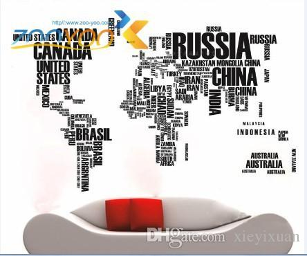

#Tradegang Forex
Trade what you see.....
Blog

7 Habits Of Highly Successful Forex Traders
Develop Stunning Money Management. There is no highly effective trader who doesn't have this. ...
Trade Without Emotion. ...Run Your Winners For Maximum Profit. ...Cut Your Losses Early. ...Repeat Your Strategy, If It Still Works. ...
Scale Up When Winning, Back Off When Losing. ...Find Your Unique Trading Edge
Can Forex Trading Make You a Millionaire?
Yes, you can become a millionaire trading forex.
It depends on how much money you start trading. If you start with $5,000 and make 10% of your capital
each month, yes, you will be a millionaire after 5 or 6 years. ...
Because you will lose all your money, your car, your house and in the end, your family.
There are two things that you have to do to become a millionaire forex trader.
First,you have to learn and master the trading skills. And you have to have a suitable amount of capital to invest in the forex market.
No one has never seen one single retail forex trader who has become able to become a millionaire through growing a small account.
There is no profitable currency trader who trades through the retail forex brokers.
SecondlyYou have to have enough capital to trade currencies through a bank account. And your capital has to be suitable enough.
You have to know that.
Of course, if you don’t believe this you can spend time and money on retail forex trading.
Unfortunately, it is not possible to start making money right after learning the forex trading basics and a trading strategy.